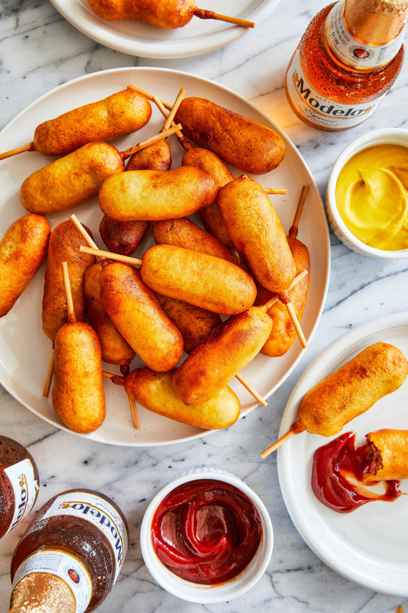

One of the best parts of college football is the Red River Rivalry, two college blue bloods, Oklahoma and Texas, playing in the heart of Texad in a stadium at the Texas State Fair! The best corn dogs you can make right at home – tastes just like the state fair. Sure to be a family favorite! There’s nothing better than a crisp golden-brown corn dog during the Red River Rivalry served at the state fair. Except, now you can make this right at home with the easiest homemade batter, served with all the ketchup and mustard your heart desires. My favorite part is of course the halved hot dogs – making these guys the most perfect miniature size.They make it just so darn easy to share and devour in seconds.